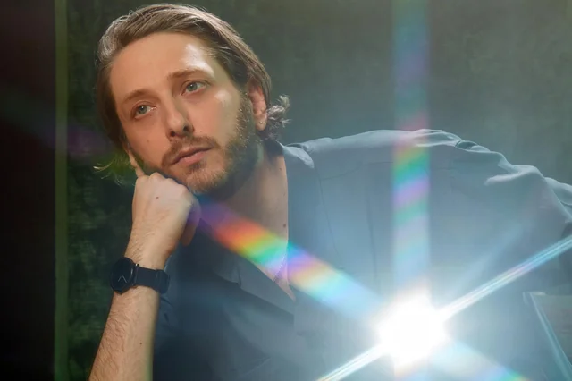
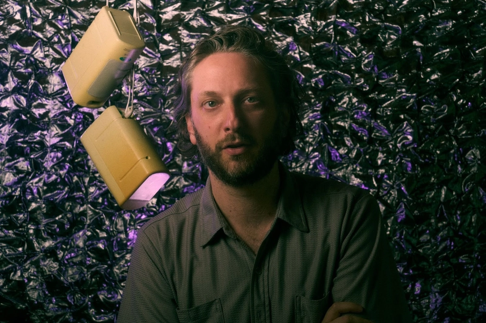

Biography
Early Life
Daniel Lopatin was born in Massachusetts to a family with a musical background. His first experiences with electronic music were inspired by his father's music collection and his Roland Juno-60 synthesizer, which he went on to extensively use in his own work, even nicknaming it "Judy". He performed at school events by playing synthesizer, and later on attended Pratt Institute to study archival science, which greatly influenced aspects of his music and artistic practice.
Career

Lopatin initially released music under a number of aliases before adopting the pseudonym Oneohtrix Point Never, a verbal play on the name of the Boston FM radio station Magic 106.7.
Early OPN recordings draw inspiration from 1970s and 80s arpeggiated synthesizer music, new-age music tropes, and contemporary developments in noise music. Lopatin released a series of cassette and CD-R projects interspersed with a trilogy of full-length albums: Betrayed in the Octagon (2007), Zones Without People (2009), and Russian Mind (2009). The majority of these tracks were later collected on the 2009 compilation Rifts, which brought him critical acclaim, it was named the second-best album of 2009 by UK magazine The Wire.
The same year, Lopatin released the audio-visual DVD project Memory Vague, which included his profile-raising Youtube video "nobody here", an eccojam. His work during this period would be associated with the late 2000s underground hypnagogic pop trend.